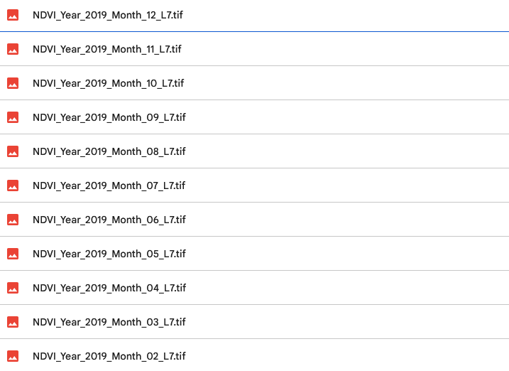
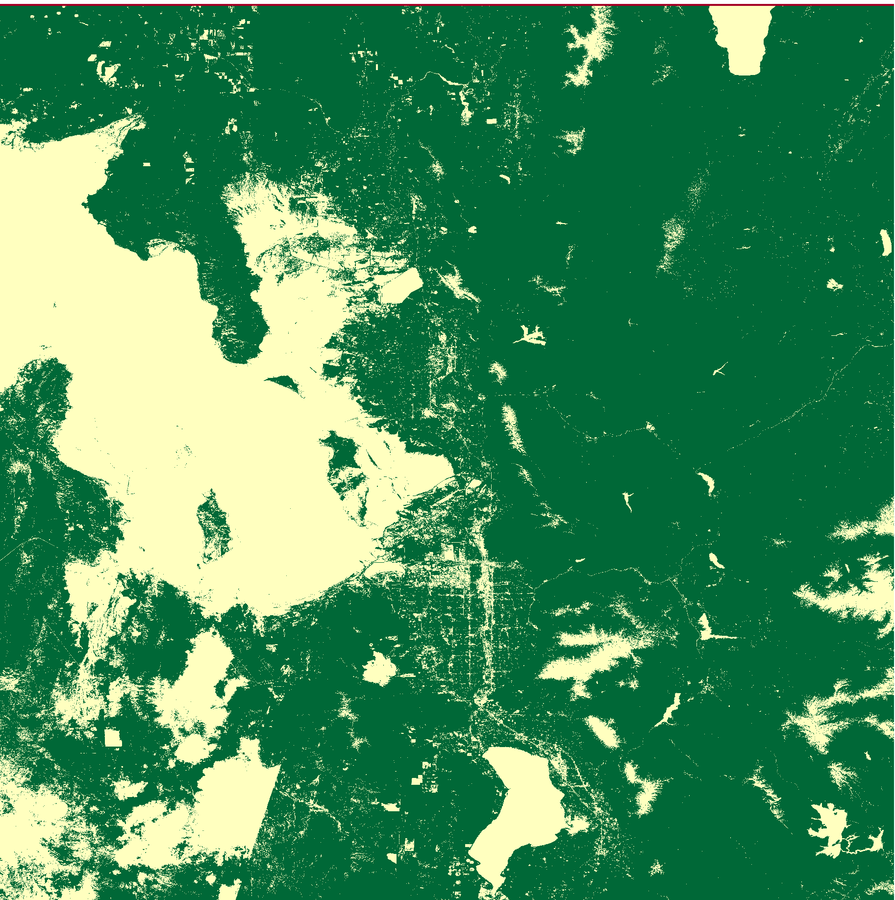

Instructions On How To Use The Code
Create a Google Account, visit Colab, and create a new notebook. Copy all of the code from this repo: GitHub Repository or just copy this notebook: Google Colab Notebook
Install Packages In Colab
Run the first piece of shell code to install Rasterio. Everything else should install automatically.

Create Your TIFF Files
Specify the bounding box in the geoCoordinates variable, each list is a coordinate, forming a box of four coordinates. Additionally, specify the folder you want your TIFF files to populate in your Google Drive. Finally, run the code and wait until the folder is full. Your TIFF Files should look like below:
Create Your NDVI Maps
Once all of your TIFF files are in your Google Drive, specify that folder as the input folder, and specify an output folder you want your maps to go in. Run the code and wait for the files to populate. The maps should look like this:

Crop Your Maps
This step simply crops your maps for analysis, specify your input and output folders, and then run the code. It should look like this:
Create Your Graphs
Finally, choose which type of graph you want. If you would like a full graph displaying every value, choose the fifth file in the repo. If not, if you would like to see all the data points in January, for example, specify your month in the month variable, and run the fourth file. Make sure you specify input/output variables. You should have something similar to this: